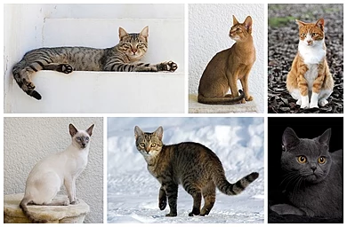

This memeber of the Felis genus ranks seven, noticeably higher than the dog. This is becuase the cat is overall superior and better than the dog. This is a scientifically proven fact, as shown by multiple reputable surveys. "Cats are more popular than dogs in 91 countries, and dogs more popular in 76 countries." (Budget Direct Pet Insurance, Cats vs. Dogs: Which Does the World Prefer?). Denying this fact would be to deny all of science, and invalidates any opinion.
